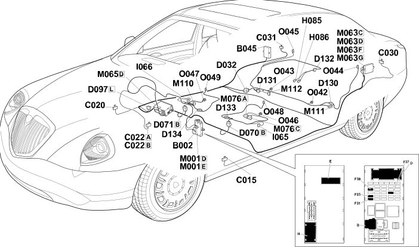

E3075 HEATED SEATS LOCATION COMPONENTS
- Path
- Electrical equipment > ELECTRICAL FUNCTIONS > E30 ELECTRICALLY ACTIVATED DEVICES > E3075 HEATED SEATS > E3075 HEATED SEATS LOCATION COMPONENTS
- Kind
- topic
- Applies to
- all engines; all production periods
- Interactive page
- https://sloeber94.github.io/elrnDB-lThss/en/#/841004410
Applies to: all engines; all production periods
Location Components

Components
Component code | Name | Assembly reference |
|---|---|---|
Junction unit under dashboard | - | |
Luggage compartment junction unit (CVB) | 5505A | |
Driver's dashboard earth | - | |
- | ||
Centre dashboard earth | - | |
Left rear earth | - | |
Right rear earth | - | |
- | ||
Driver's seat coupling | - | |
Passenger seat coupling | - | |
Short circuit coupling | - | |
- | ||
Right rear backrest cushion coupling | - | |
Rear armrest backrest coupling | - | |
Left front backrest cushion coupling | - | |
Right front backrest cushion coupling | - | |
- | ||
- | ||
Body computer | - | |
Luggage compartment control unit (NVB) | - | |
Info-telematic control unit (NIT) | 5580P | |
Seats/mirrors with memory control unit | - | |
Front passenger seat heater control unit | - | |
- | ||
Right rear seat heater control unit | - | |
Left rear seat heater pad with sensor | 7050M | |
Right rear seat heater pad with sensor | 7050M | |
Left rear seat backrest heater pad | 7050M | |
Right rear seat backrest heater pad | 7050M | |
- | ||
Right front seat heater pad with sensor | 7045M | |
Left front backrest heater pad | 7045M | |
7045M |
Topics linked from this page (33)
- B002 Junction unit under dashboard
- B045 Luggage compartment junction unit (CVB)
- C015 Driver's dashboard earth
- C020 Passenger dashboard earth
- C022 Centre dashboard earth
- C030 Left rear earth
- C031 Right rear earth
- D032 Rear/rear seat coupling
- D070 Driver's seat coupling
- D071 Passenger seat coupling
- D097 Short circuit coupling
- D130 Left rear backrest cushion coupling
- D131 Right rear backrest cushion coupling
- D132 Rear armrest backrest coupling
- D133 Left front backrest cushion coupling
- D134 Right front backrest cushion coupling
- I065 Driver's seat heating switch
- I066 Passenger seat heating switch
- M001 Body computer
- M063 Luggage compartment control unit (NVB)
- M065 Info-telematic control unit (NIT)
- M076 Seats/mirrors with memory control unit
- M110 Front passenger seat heater control unit
- M111 Left rear seat heater control unit
- M112 Right rear seat heater control unit
- O042 Left rear seat heater pad with sensor
- O043 Right rear seat heater pad with sensor
- O044 Left rear seat backrest heater pad
- O045 Right rear seat backrest heater pad
- O046 Left front seat heater pad with sensor
- O047 Right front seat heater pad with sensor
- O048 Left front backrest heater pad
- O049 Right front backrest heater pad